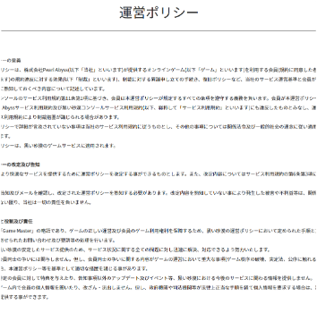
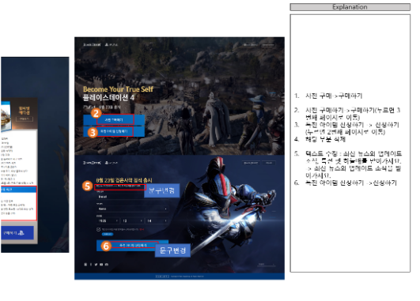
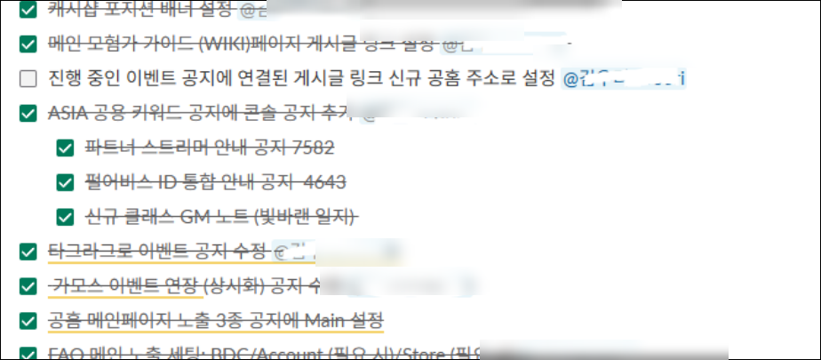
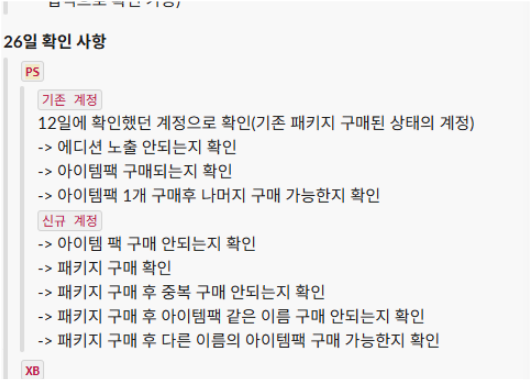
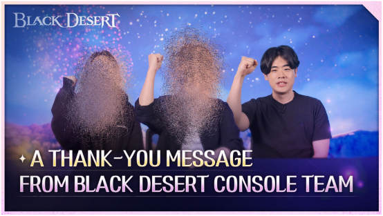
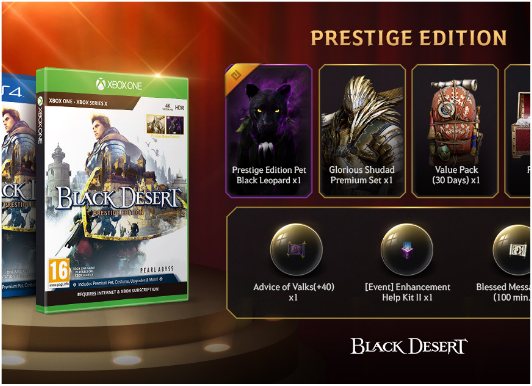
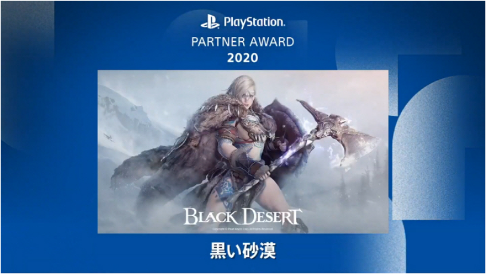
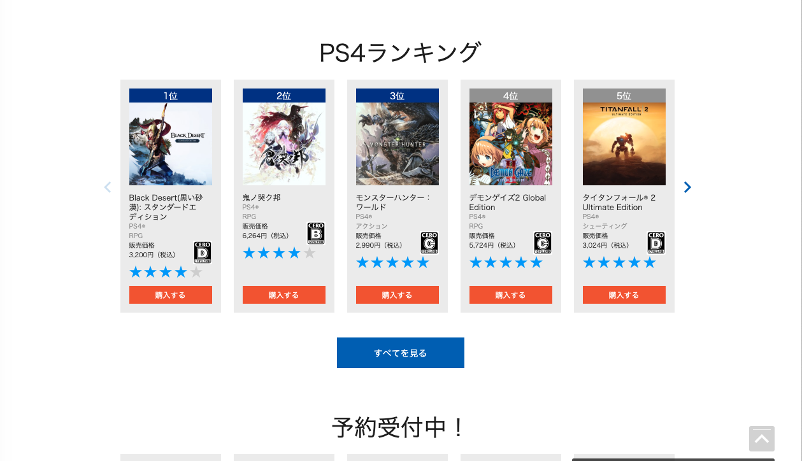
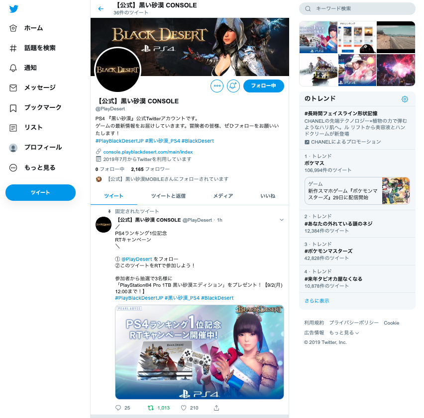

데이터 기반 문제 발견 → 개선 기획 → 반영
유저 핵심 지표(공·방 분포, CS·리뷰 추이, 판매 데이터)를 AI를 활용해 정기 분석하고, 결과를 그대로 믿지 않고 원인·맥락을 끝까지 규명한 뒤 가설 검증을 거쳐 개선을 제안하고 반영합니다.
공·방 분포 정체 발견 → 이벤트로 가설 검증 → 콘텐츠 개선 반영 → 중상위 유저 약 30% 상위 진입
ABOUT
유저의 공격력·방어력 분포 분석으로 성장 병목을 발견해 콘텐츠 개선을 반영했고, 그 결과 중상위 유저 약 30%가 상위 구간으로 진입한 경험이 제가 일하는 방식을 가장 잘 보여줍니다.
STRENGTHS
유저 핵심 지표(공·방 분포, CS·리뷰 추이, 판매 데이터)를 AI를 활용해 정기 분석하고, 결과를 그대로 믿지 않고 원인·맥락을 끝까지 규명한 뒤 가설 검증을 거쳐 개선을 제안하고 반영합니다.
공·방 분포 정체 발견 → 이벤트로 가설 검증 → 콘텐츠 개선 반영 → 중상위 유저 약 30% 상위 진입
시장에 대한 이해를 근거로 회사를 설득해 시작부터 출시까지 주도한 리테일 패키지 기획, 판매 데이터·수요 예측 기반 세대전환기 BM 설계 등 제안과 설득으로 상품 단위 성과를 만듭니다.
리테일 패키지 글로벌 NRU 183%↑, 세대전환기 BM 설계 매출 210% 성장
문제가 터지기 전에 구조를 설계하는 역량입니다. 계정 통합 사전 QA에서 미공유 스펙 변경을 직접 발견해 대응 체계를 설계하고, 매크로 대응 프로세스로 분쟁을 예방합니다.
미공유 스펙 변경 2건 사전 발견, 매크로 대응 분쟁 0건, 세대전환기 법적 분쟁 0건
한국 최초 콘솔 MMORPG 크로스플레이 론칭에서 기획·DB·프로그램팀 협의를 리딩했고, 글로벌 계정 통합에서는 미국 오피스·웹·정책·QA팀과 실시간 협업하며 체크리스트를 총괄했습니다. 판단 과정을 투명하게 공유해 팀이 함께 성장하는 협업을 지향합니다.
혼자 처리하는 운영이 아니라 여러 팀을 움직여 결과를 만드는 방식
일본어 원어민으로서 공지·약관·이벤트 규약 현지화, 일본 자금결제법·CERO 심의 대응, 도쿄 오피스 협업, 임원 통역 동행, 4개 언어(한/영/독/불) 운영 R&R 설계까지 아우릅니다.
일본 시장 중심의 글로벌 라이브 서비스 운영 전문성
WORK
펄어비스 (Pearl Abyss) · 검은사막 콘솔 라이브서비스팀 · 2019.07 ~ 현재 (7년+, 단일 재직)



격주 정기점검·업데이트와 게임 데이터 세팅·패치 관리를 7년 넘게 이어온 메인 스킬. 일본어 공지·약관 현지화, X·Discord 커뮤니티 운영, 인게임 GM 활동, 공식 유튜브 영상 출연, 검출 툴 개발까지 라이브의 모든 국면을 커버한다.



Pearl Abyss ID 통합 전환. 사전 QA에서 미공유 스펙 변경 2건을 직접 발견해 FAQ·CS 템플릿을 선제 구축하고, 점검 당일 체크리스트를 총괄하며 미국 오피스와 실시간 협업했다.


구세대 서비스 종료와 차세대 전환. 각국 환불 규정과 일본 자금결제법을 선제 검토해 환불 기준을 세우고, 판매 데이터 기반 BM 기획과 로드맵 선공개·안내 영상 출연으로 이탈을 방어했다.

일본에서 자라며 체득한 실물 패키지 선호 문화를 근거로 직접 제안해 회사를 설득, 기획부터 출시까지 주도한 프로젝트.



한국 최초 콘솔 MMORPG 크로스플레이. 출시 일정 역산과 거점전 세금 동기화 이슈 선제 발견으로 부서 협의를 이끌고, 매크로 대응 프로세스를 설계해 제재 후속 분쟁 0건을 유지했다.


스토어 구매테스트 프로세스 구축과 한/영/독/불 R&R 배분, 선행 플랫폼 데이터 분석 기반 FAQ 선제 배포, CERO 심의 확인과 약관 일본어 현지화 등 일본 출시 요건 대응을 도맡았다.


신작 준비팀에 파견되어 테스트 플레이·리뷰 추이 분석 기반 이슈 대응 프로세스를 세우고, CS·포럼 수집의 한계를 데이터로 증명해 운영툴 기반 수집으로 전환을 주도했다.
EDUCATION
일본학과 · 2020.03 편입 ~ 2022.02 졸업 (재직 중 편입·졸업, 일·학업 병행 완주)
일어일본학과 (복수전공: 디지털콘텐츠전공/미디어콘텐츠) · 2014.03 입학 ~ 2019.07 자퇴
경제학과 · 2013.04 입학 ~ 자퇴
2011.03 ~ 2013.02 졸업
일본어·한국어 모국어 — 통역·번역·영상 출연 실무 수행
🏆 PlayStation Partner Awards 2020 (Japan Asia)
SIDE PROJECT
반복되는 실무 문제를 직접 도구로 해결해 온 기록입니다. Python·생성형 AI로 만들어 팀 정규 프로세스로 자리 잡았고, 개인 시간에 사내 데이터 없이 만든 범용 툴로 공개 배포 중입니다.
다국어 패치노트 등록 시 한국어 원문 노출을 자동 검출.
검수 90분 → 5분 (95%↓) · 노출 사고 0건
다국어 공지·패치노트 작성 시 반복 포맷팅을 자동화.
콘솔 플랫폼별 키 포맷 변환 작업을 자동화.
유저 리포트 데이터를 보기 쉽게 정리하는 뷰어.